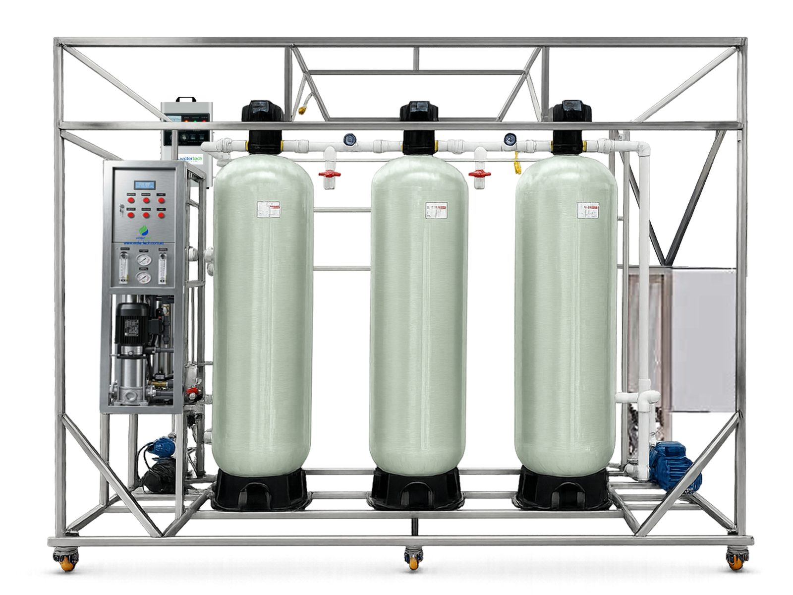
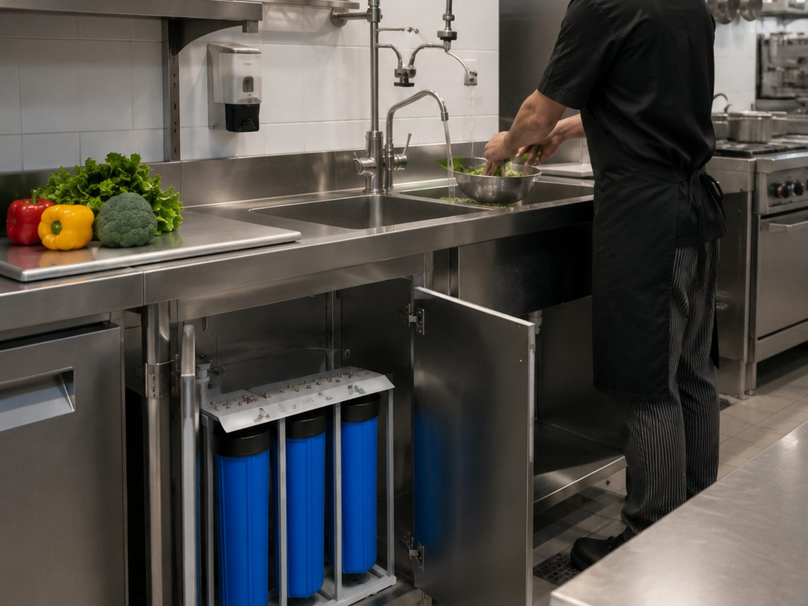
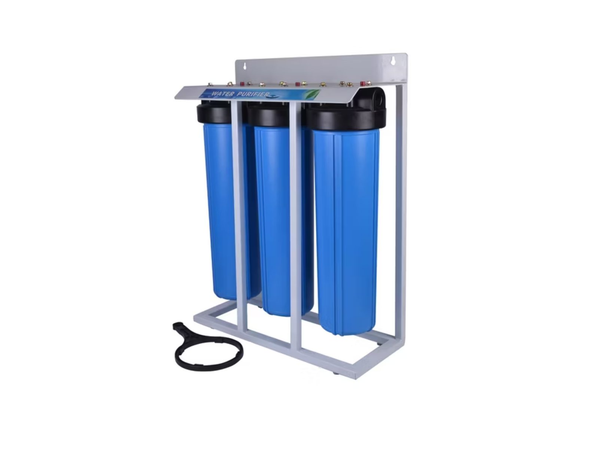
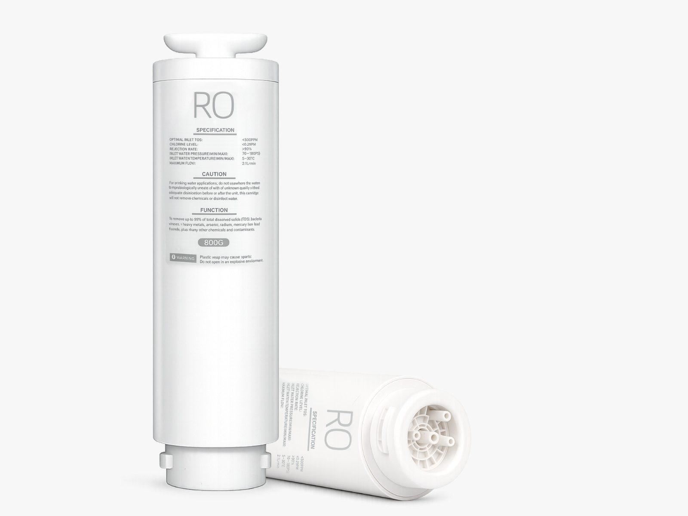
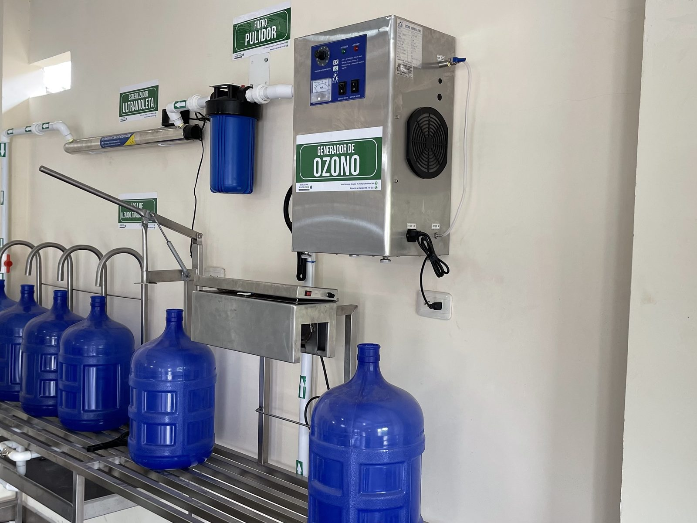
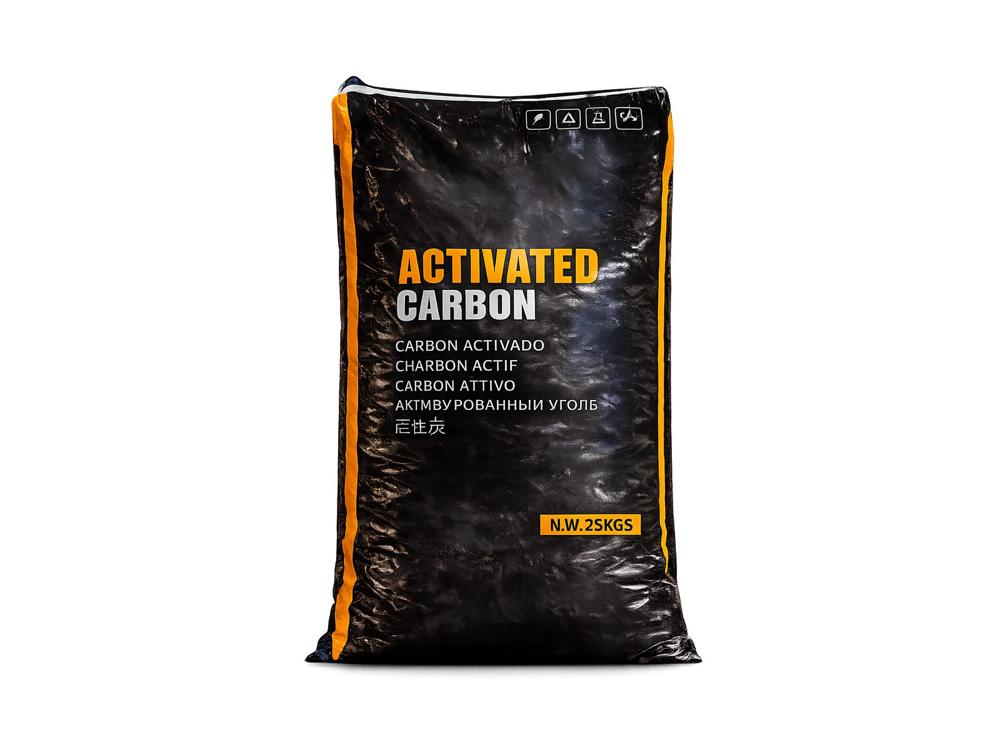

Categorías
Categorías claras para encontrar la solución correcta.
Organizamos el portafolio para que cada cliente identifique rápido si necesita equipos, soporte o componentes específicos según su operación, consumo y nivel técnico.
Cómo se organiza
-
Equipos principales
Primero las categorías de mayor impacto industrial y comercial.
-
Soporte y continuidad
Luego postventa, repuestos y respaldo técnico para sostener rendimiento.
-
Componentes técnicos
Membranas, UV, ozono y medios filtrantes para necesidades más específicas.
Catálogo
Portafolio organizado

Equipos industriales Sistemas de alto flujo y configuraciones para procesos complejos. Abrir página
Equipos comerciales Soluciones listas para negocios con necesidad de continuidad. Abrir página
Repuestos y soporte Mantenimiento, consumibles y postventa para sostener rendimiento. Abrir página
Membranas RO y UF Procesos de separación, rendimiento y calidad de agua resultante. Abrir página
Sistemas UV y ozono Desinfección avanzada para elevar seguridad microbiológica. Abrir página
Cargas filtrantes Aplicaciones, beneficios y tipo de medios disponibles. Abrir página- Ruta más clara Cada categoría ayuda a filtrar mejor la necesidad del cliente.
- Enfoque comercial Industrial primero, luego comercial y después componentes clave.
- Decisión más rápida Menos confusión y mejor camino hacia una cotización útil.
Portafolio